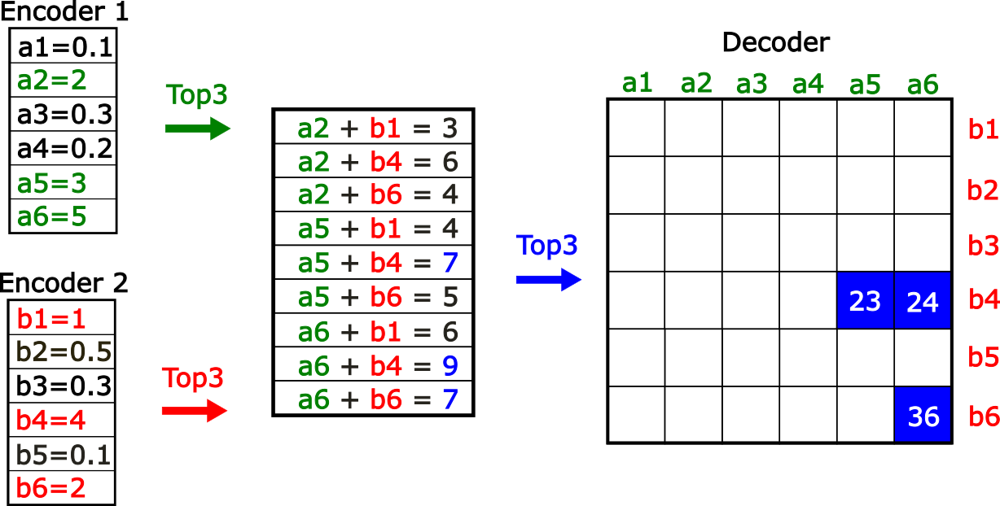
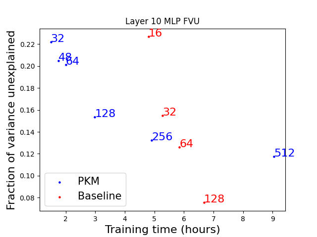
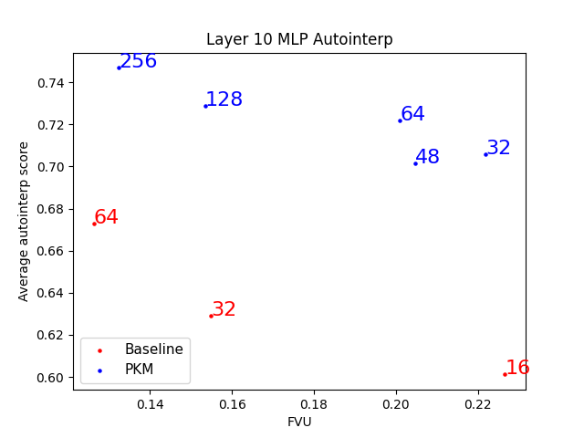
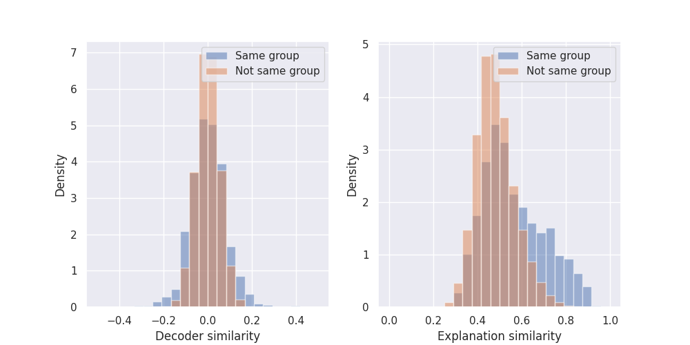
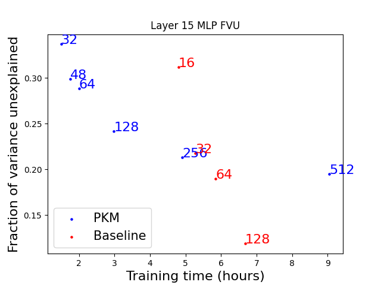
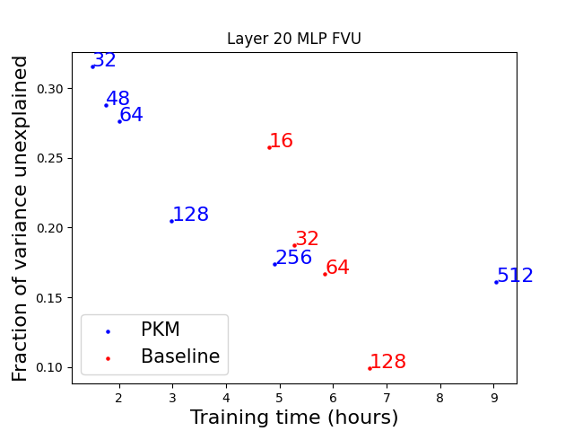

Background
High reconstruction errors in sparse coders[^1] are still a significant issue and reducing them could improve all their downstream usecases. There has been significant research on developing new architectures, activation functions, and training procedures that constitute Pareto improvements in the tradeoff between sparsity and accurate reconstruction.
Our experiments were focused on comparing TopK skip transcoders with product key memory (PKM) skip transcoders trained on SmolLM 2 135M, although we expect these results to replicate on other models.
Key Findings
-
PKM transcoders can be competitive with TopK transcoders, as they train faster even for larger expansion factors. After a certain size, however, the baseline models perform better.
-
We find PKM transcoders to be slightly more interpretable than TopK transcoders. They also offer a natural grouping of latents.
-
Code to train and run PKM transcoders can be found at https://github.com/EleutherAI/sparsify/tree/e2e-pkm. Models can be found at https://huggingface.co/EleutherAI/pkm-coders.
[^1]: Sparse autoencoders, transcoder and cross layers transcoders are types of sparse coders.
Product Key Memory Transcoders
Product key memories (PKM) were proposed for decomposing large MLP input projections by splitting the input dimension and then considering all possible combinations of half-weights, allowing for a larger amount of possible “keys” while keeping the search over the keys fast. The idea of PKM lends itself to sparse coders very naturally: instead of having a large encoder and an equally sized decoder, we could instead have two smaller encoders that when combined map to a larger decoder (Figure 1). Details about the implementation can be found at the end of the post.

Figure 1 - Two smaller encoders can be used to map to a larger encoder that is of a size equal to the product of the two smaller encoders. Overall we perform 3 TopK operations, two over the smaller encoders and one over the sum of the candidates. We can then map the indices of the encoders to the decoder. This construction is less expressive because it is not possible to represent arbitrary combinations of latents.TopK sparse coders’ activations are lightweight and can be easily sent from the accelerator to the CPU, and Gao et al. 2024 showed that the decoder can be significantly optimized, exploiting the sparsity of the activations. However, in traditional architectures, the encoder is responsible for half of the parameters and the majority of the compute cost for the forward and backward pass (Gao et al. Appendix D). PKMs reduce the encoder parameter count, speeding up the forward pass, as well as inducing a natural grouping between latents.
To investigate whether this optimization is worth it, we train skip transcoder PKMs with different expansion factors, from 32x to 512x, and compare their FVUs, auto interpretability scores and feature absorption metrics with regular skip transcoders (SSTs), scanning over expansion factors from 16x to 128x. We trained the sparse coders on 3 different layers of SmolLM 2, using the Muon optimizer with a learning rate of 0.008, for 5000 steps with a batch size of 32 and 2049 context length, totaling 0.3B tokens of fineweb-edu-dedup-10b. While training on more tokens would lead to better final results the training trends seem to indicate that PKM would never catch up to the baseline. On all the models the K in the TopK activation function was cooled down starting from 4x the input dimension, linearly decreasing it over ⅘ of training and then keeping it constant.
Reconstruction ability

Figure 2 - PKM sparse autoencoders train faster for the same number of latents. Each point is labeled with the expansion factor of the sparse coder. Although larger expansion factors are needed to achieve the same FVU, up to a certain size, training PKM models is still faster.We find that PKMs can achieve similar reconstruction loss to a regular skip transcoder while being faster to train for some model sizes (Figure 2). Due to the smaller encoder, we can train models with up to 4x the number of latents while still being faster to train. Unfortunately, larger PKMs with very big expansion factors (x512) take longer to train than baseline models which achieve better FVU. The same results are observed for the other layers we trained on (Figure S2), although the difference in FVU between the 256x PKM and the 32x baseline is smaller.
While all sizes of sparse coders up to x128 could fit in a single A40 GPU with a batch size of 32, larger expansion factors required reducing the batch size to 16 at expansion factors of x128, to 4 at x256 and 2 at x512, partially explaining the slow down observed for the larger PKMs. The larger baseline, at x128 expansion factor, also required a reduced batch size of 16. We expect that if we would have trained even larger baselines, their slowdown would have been more pronounced. On the other hand, it seems that PKMs have better scaling properties for expansion factors that are close to what is currently done in the literature.
Even though we observe that some PKM expansion factors achieve better FVU while being faster to train, these results were not consistent across all layers and are unsure if there is a point to using PKMs instead of the normal SSTs.
Interpretability
To evaluate the interpretability of our models we use the Delphi repo. To do so, we explain 200 randomly chosen latents from each transcoder after collecting activations on 10 million tokens of fineweb-edu-dedup-10b. After dividing the activations into 10 bins we sample 4 examples from each bin and show them to the explainer model. We then evaluate how good the explanations are by computing the detection and fuzzing scores. The detection task asks the scorer model to identify which examples are active given a latent explanation, while the fuzzing task asks the scorer model to identify if the highlighted tokens are the activating ones, given a latent explanation. The explainer and the scorer are both Llama 3.1 70B Instruct models.
Our results indicate PKMs are slightly more interpretable, as their auto-interpretability scores are higher than baseline SSTs (Figure 3) across the board. Because these models were trained on 1/20 of the data we normally train them on, their interpretability scores are slightly lower than we normally observe, but we don't expect that the picture would invert with more training.

Figure 3 - The interpretability of PKM sparse coders is in general higher than the interpretability of the baseline.We compare the cosine similarity of the decoder direction of latents that are part of the same group with the decoder direction of latents that are not part of the same group and find that the latents that are in the same group have a wider distribution, with higher absolute cosine similarities (left Figure 4). We also embed the explanations and compute the similarity between them, finding that the explanations of latents in the same group are more similar to each other than across groups (right Figure 4).

Figure 4 - The latents that belong to the same group are more similar to each other than across groups, and that their interpretations are also more similar.Contributions
Stepan Shabalin wrote the training code for PKMs and performed the first experiments. Gonçalo Paulo finalized the experiments and wrote the analysis. Nora Belrose supervised and reviewed the manuscript.
Appendix
PKM implementation
The algorithm for the forward pass of the PKM encoder is as follows: 1. Compute top-k activations for each of the sub-encoders 2. Combine them into $K^2$ candidates 3. Remove invalid combinations (>= num_latents) 4. Select top-K activations from all candidates combined
def topk(self, x, k: int):
orig_batch_size = x.shape[:-1]
x1, x2 = torch.chunk(
self._weight(x).unflatten(-1, self.pkm_base * 2),
2,
dim=-1,
)
k1, k2 = k, k
w1, i1 = x1.topk(k1, dim=-1)
w2, i2 = x2.topk(k2, dim=-1)
w = torch.nn.functional.relu(w1[..., :, None] + w2[..., None, :]).clone()
i = i1[..., :, None] * self.pkm_base + i2[..., None, :]
mask = i >= self.num_latents
w[mask] = -1
w = w.view(-1, self.num_heads, k1 * k2)
w, i = w.topk(k, dim=-1, sorted=True)
i1 = torch.gather(i1, -1, i // k2)
i2 = torch.gather(i2, -1, i % k2)
i = i1 * self.pkm_base + i2
w = w * (i < self.num_latents)
i = i.clamp_max(self.num_latents - 1)
return w.view(*orig_batch_size, k), i.reshape(*orig_batch_size, k)
FVU other layers

